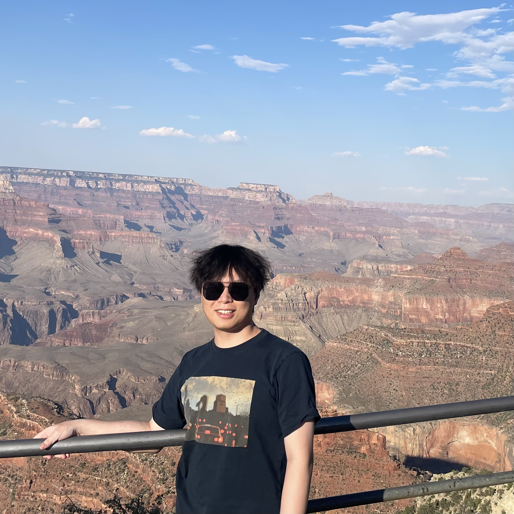
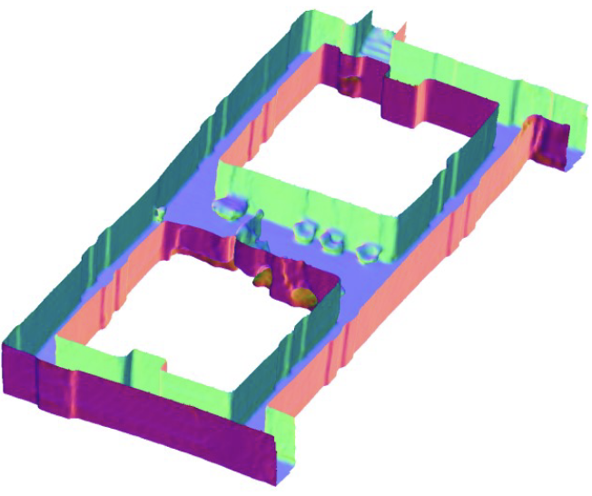
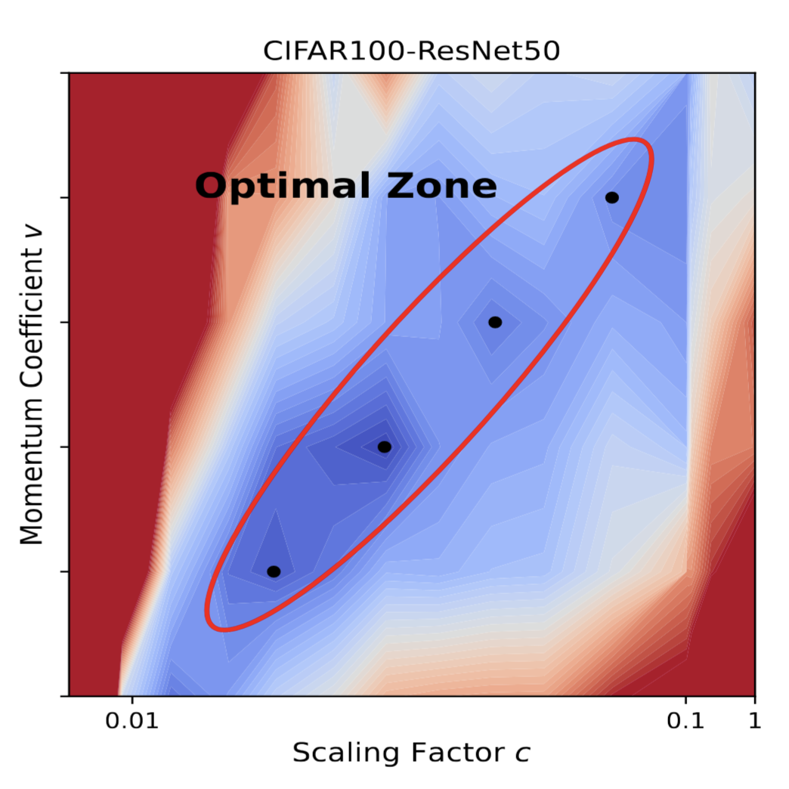
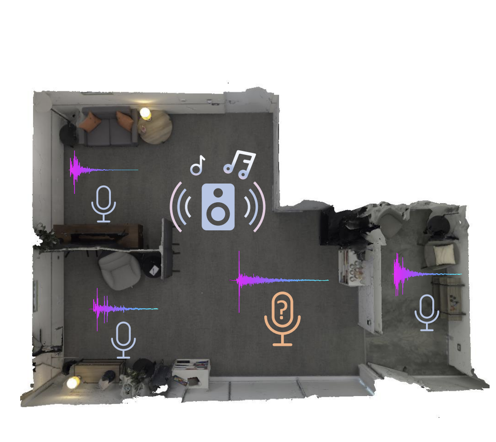
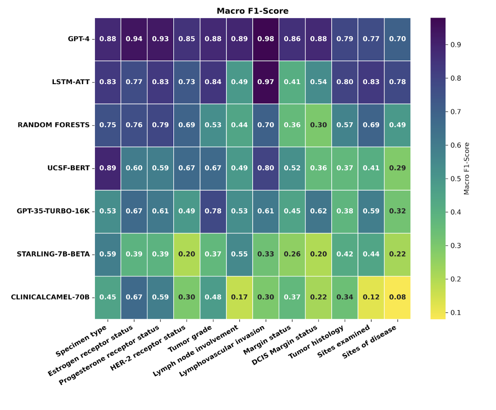
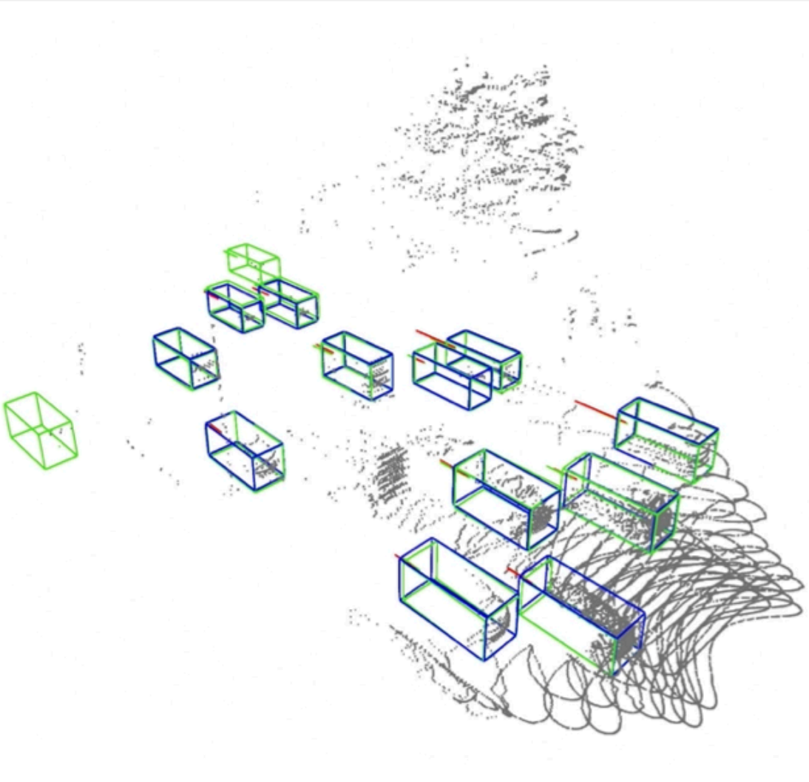
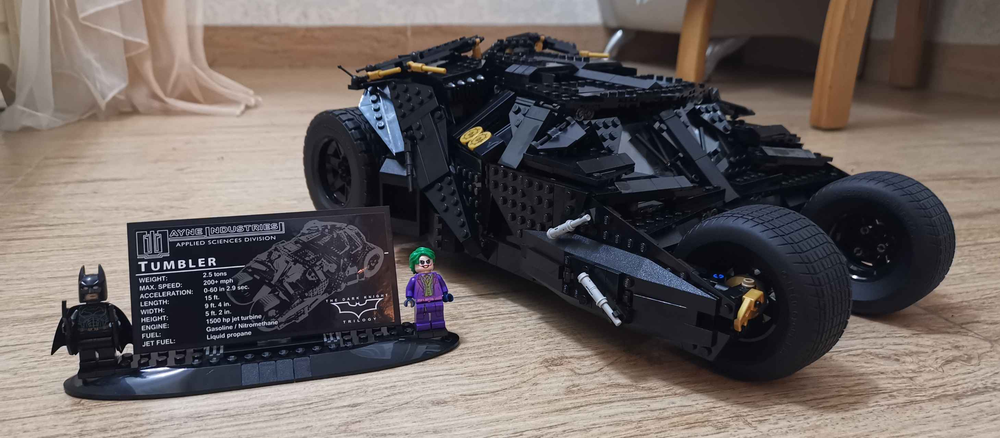

|
Zhiwei Zheng
I am currently a second year Ph.D student at University of Pennsylvania focusing on multi-modality learning and generation, advised by Prof. Mingmin Zhao.
Before that, I obtained my Master's degree in EECS and Bachelor's degree in Automation from UC Berkeley and Huazhong University of Science and Technology, respectively. I also interned at Shanghai AI Lab, working on autonomous driving.
Email /
Scholar /
Github
|

|
Research Interest
My research focuses on multi-modal learning, combining images and wireless signals, and their applications in robotic perception and data generation. Currently, I am mainly working on scene generation, human motion generation and
signal simulation to bridge the sim-to-real gap for wireless signals. Feel free to drop me an email if you are interested.
|
|

|
RF-Based 3D SLAM Rivaling Vision Approaches
Haowen Lai*, Zhiwei Zheng*, Mingmin Zhao
MobiCom 2025.
We propose an uncertainty quantification specifically designed for wireless signals and propsoe a probabilistic learning for occupany field to eanble high-resolution SLAM.
|
|

|
On the Performance Analysis of Momentum Method: A Frequency Domain Perspective
Xianliang Li*, Jun Luo*, Zhiwei Zheng*, Hanxiao Wang, Li Luo, Lingkun Wen, Linlong Wu, Sheng Xu
ICLR 2025.
We present a frequency domain analysis framework that interprets the momentum method as a time-variant filter for gradients and propose a heuristic optimizer.
|
|

|
Acoustic Volume Rendering for Neural Impulse Response Fields
Zitong Lan, Chenhao Zheng, Zhiwei Zheng, Mingmin Zhao
NeurIPS 2024 (Spotlight).
We propose acoustic volume rendering in frequency domain to construct neural impulse response fields.
|
|

|
A comparative study of large language model-based zero-shot inference and task-specific supervised classification of breast cancer pathology reports
Madhumita Sushil*, Travis Zack*, Divneet Mandair*, Zhiwei Zheng, Ahmed Wali, Yan-Ning Yu, Yuwei Quan, Dmytro Lituiev, Atul J Butte
JAMIA 2024.
We explore whether LLMs could reduce the need for large-scale annotations for clinical reports.
|
|

|
VeloVox: A Low-cost and Accurate 4D Object Detector with Single-frame Point Cloud of Livox LiDAR
Tao Ma*, Zhiwei Zheng*, Hongbin Zhou, Xinyu Cai, Xuemeng Yang, Yikang Li, Botian Shi, Hongsheng Li
ICRA 2024.
We achieve velocity estimation with only one-frame of point clouds.
|
Miscellaneous
- LEGO fan: Spent 7 hours building Batmobile.

|
|
{kind=link}